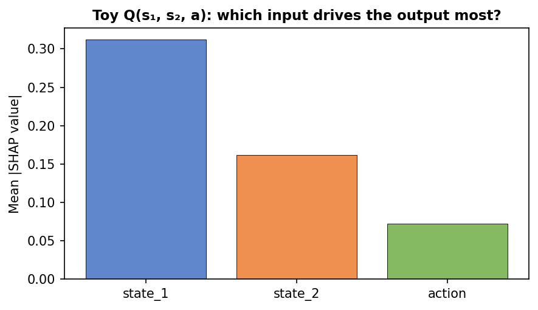
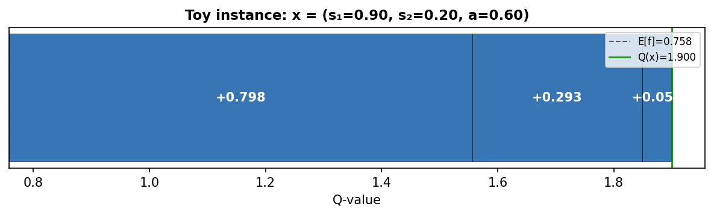
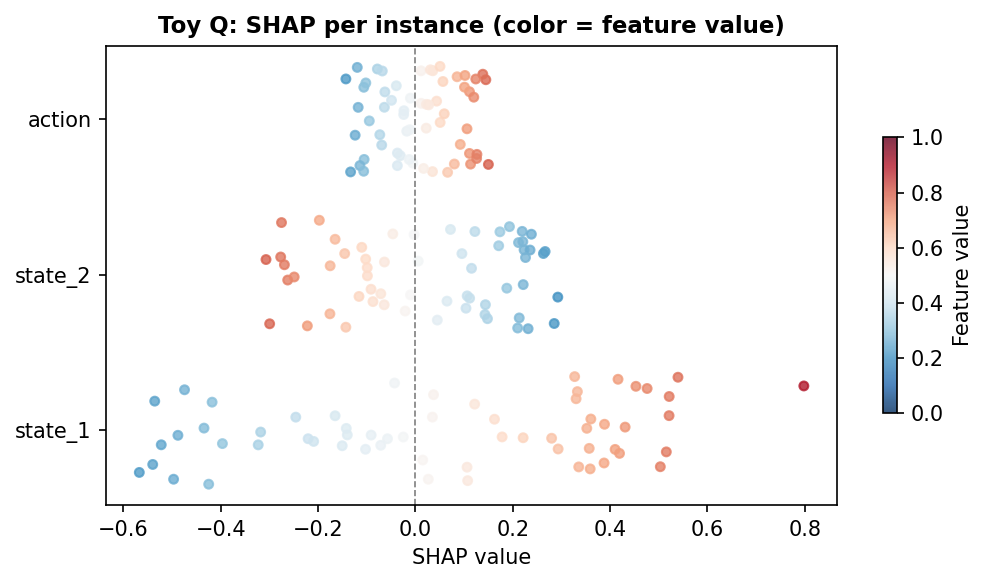
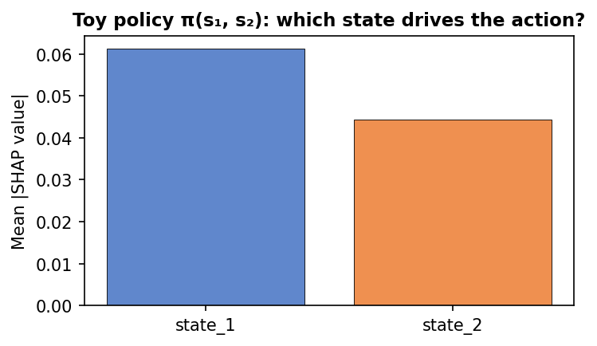
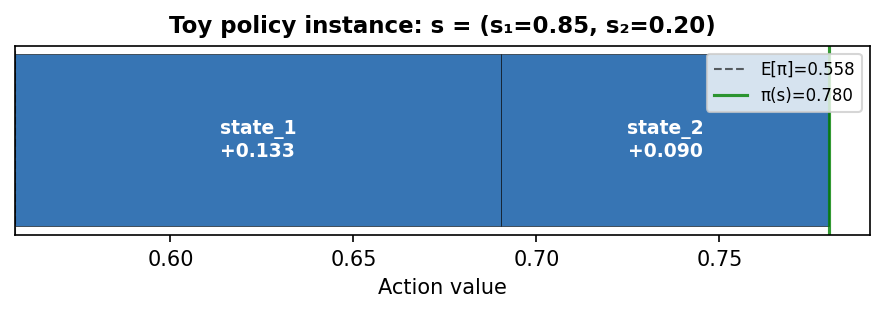
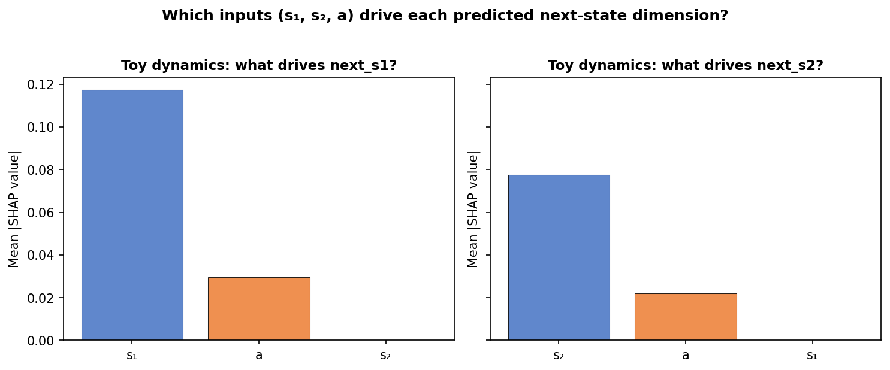
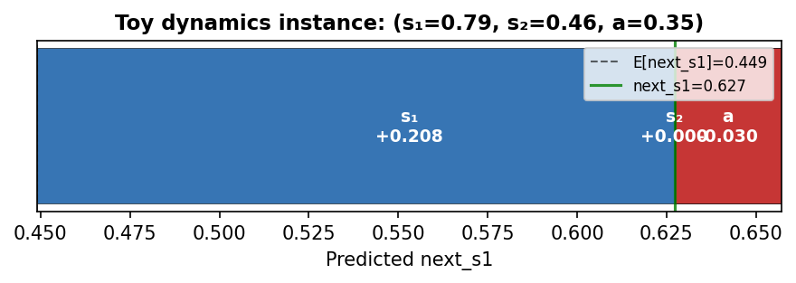

Chapter 11: Explainability in Offline RL
"A policy that achieves 80% Directional Accuracy but cannot explain why it chose each action is hard to trust and impossible to certify."
Why Explainability Matters in Industrial Offline RL
The algorithms in Chapters 1–10 produce policies that achieve high reward, respect physical constraints, and generalize to unseen operating regimes. What they do not produce is an answer to the question an operator will inevitably ask: why did the agent command this setpoint at this moment?
This is not merely a regulatory concern, though in many industries it is that too. It is a practical reliability question. A policy whose decisions are opaque cannot be diagnosed when it fails. An operator who does not understand the agent's reasoning cannot override it intelligently. A model that fits data well but for the wrong reasons will fail silently when the process changes.
Explainability in Offline RL is harder than in standard supervised learning for three reasons specific to the offline setting.
There are three separate models to explain. A trained Offline RL agent contains a Q-function (the critic), a policy (the actor), and optionally a dynamics model. Each answers a different question, and their explanations do not always agree. The Q-function might rate an action highly because temperature is near its setpoint; the policy might choose that action because level is near its lower bound. Understanding the discrepancy is as important as understanding the agreement.
The Q-function's input is a concatenation of state and action. Unlike a classifier whose input is a single feature vector, the Q-function takes $(s, a)$ as input. SHAP values computed over this concatenated space tell you whether the high Q-value comes from the state (the situation was favorable) or the action (the specific action was appropriate for this situation).
The behavior policy's distribution is uneven. SHAP values are relative to a background distribution. In Offline RL, the natural background is the offline dataset — dense near the operating setpoint and sparse near disturbances. SHAP values answer: "how does this instance differ from the typical operating point, and how does that difference affect the output?"
📄 Full code:
chapter11.py. Figures:chapter11_toy_figures.py; causal toy:chapter11_causal_toy.py.
SHAP Background
SHAP (SHapley Additive exPlanations, Lundberg & Lee, 2017) decomposes the output of a model $f$ into additive contributions from each input feature:
where $\phi_0 = \mathbb{E}[f(X)]$ is the expected model output over the background distribution, and $\phi_i(x)$ is the contribution of feature $i$ to the prediction for instance $x$.
The SHAP values ${\phi_i}$ are the unique decomposition satisfying: - Efficiency: $\sum_i \phi_i = f(x) - \phi_0$ — values sum to total prediction minus baseline - Symmetry: features with equal marginal contributions receive equal SHAP values - Dummy: a feature with zero marginal contribution receives $\phi_i = 0$
KernelExplainer computes SHAP values without architecture knowledge. It fits a weighted linear model to masked predictions:
where $z$ is a binary mask, $h(x, z)$ replaces masked features with background samples, and $\pi(z)$ weights coalitions by the Shapley kernel. This works on any black-box function — Q-networks, policy networks, ensemble dynamics — with no architecture assumptions.
We use KernelExplainer throughout for consistency: all three explanations use the same method, making them directly comparable.
Toy example: what SHAP shows
A minimal example fixes intuition. Consider a toy Q-function with three inputs: $Q(s_1, s_2, a) = 2 s_1 - s_2 + 0.5 a$. So state_1 pushes Q up, state_2 pushes it down, and the action has a smaller positive effect. We draw a background from "typical" operation (values in $[0.3, 0.7]$) and explain a set of instances. SHAP attributes each prediction to the three features.
Which feature matters most? The bar chart below shows mean $|\phi_i|$ over the explained instances. State_1 and state_2 dominate (they have larger coefficients), and SHAP recovers that.

Why is this one instance’s Q high? The waterfall plot takes a single instance (e.g. high $s_1$, low $s_2$) and shows how each feature’s SHAP value moves the output from the baseline $\phi_0 = \mathbb{E}[Q]$ to the final $Q(x)$. Positive bars (state_1, action) push Q up; the negative bar (state_2) pushes it down.

Spread across instances. A beeswarm plot shows one dot per instance per feature; the x-axis is SHAP value and the color is the feature’s value (blue = low, red = high). You see that high state_1 tends to go with positive SHAP (red dots on the right) and high state_2 with negative SHAP — the model’s monotone dependence is visible.

Toy policy: which state feature drives the action? Next, take a toy policy $\pi(s_1, s_2) = \text{clip}(0.5 + 0.4 s_1 - 0.3 s_2)$ with a single action. State_1 pushes the action up, state_2 pushes it down. Policy SHAP attributes the scalar action to the two state inputs. The bar chart shows which state variable the policy "looks at" most; the waterfall for one state shows how each feature's contribution moves the output from the average action $\mathbb{E}[\pi]$ to $\pi(s)$. In the real coating setup (Level 2) we have two action dimensions (heat_input, flow_input); we explain each separately and get one such bar and waterfall per action.


Toy dynamics: which input drives the predicted next state? Finally, a toy dynamics model with two next-state dimensions: $\hat{s}_1' = 0.7 s_1 + 0.2 a$ and $\hat{s}_2' = 0.6 s_2 + 0.15 a$. So the first output is driven by current $s_1$ and action $a$; the second by $s_2$ and $a$. We explain each output separately (as in Level 3). The two-panel bar chart shows mean $|\phi_i|$ for the three inputs $(s_1, s_2, a)$ when predicting $\hat{s}_1'$ and $\hat{s}_2'$ — SHAP recovers that $s_1$ and $a$ matter for next_s1, and $s_2$ and $a$ for next_s2. The waterfall for one $(s, a)$ instance shows how each input's SHAP adds up from the baseline prediction to $\hat{s}_1'$.


All of these figures are produced by running python code/chapter11_toy_figures.py (see the script for the exact toy models and SHAP setup). Later in this chapter we check that the Q-function and policy attend to similar state features (rank correlation), and that the dynamics model obeys simple physics (e.g. heat_input → next_temperature positive); the same SHAP outputs feed those consistency checks.
Three Levels of Explanation
Level 1: Q-function SHAP — Why Does the Agent Value This Action?
The Q-function $Q(s, a)$ takes the concatenated $(s, a)$ vector as input and outputs a scalar value estimate. SHAP on this input answers which features — current state variables or the chosen action — contribute most to the Q-value.
class QFunctionWrapper:
"""
Wrap QNetwork as numpy-in / numpy-out for SHAP KernelExplainer.
Input: X ∈ R^{n × (state_dim + action_dim)} — [state | action]
Output: q ∈ R^n — Q-value per sample
"""
def __call__(self, X: np.ndarray) -> np.ndarray:
with torch.no_grad():
x_t = torch.FloatTensor(X).to(self.device)
s = x_t[:, :self.s_dim]
a = x_t[:, self.s_dim:]
q = self.q(s, a)
return q.cpu().numpy()
Feature vector: [temperature, filler_frac, viscosity, density, level, heat_input, flow_input].
State feature SHAP answers: "was this situation favorable?" Action feature SHAP answers: "was this action appropriately chosen for this state?"
Expected pattern for a well-trained CQL agent: state features near their setpoints → positive SHAP (favorable situation → high Q). If action SHAP values are near zero regardless of action magnitude, the Q-function ignores the action — a sign of Q-function collapse.
Level 2: Policy SHAP — Why Does the Agent Choose This Action?
We explain each action dimension separately (SHAP requires scalar output):
class PolicySingleOutputWrapper:
"""
action_idx = 0 → heat_input
action_idx = 1 → flow_input
Explains deterministic mean action tanh(μ_θ(s)) — not sampled,
so SHAP estimates are stable across calls.
"""
def __call__(self, S: np.ndarray) -> np.ndarray:
with torch.no_grad():
s_t = torch.FloatTensor(S).to(self.device)
mean, _ = self.policy._dist(s_t)
action = torch.tanh(mean)
return action[:, self.action_idx].cpu().numpy()
Expected pattern: heat_input driven primarily by temperature deviation; flow_input by filler_frac deviation. If level has high SHAP for flow_input, the policy learned that flow rate affects level — physically correct (level depends on inflow) and a sign that the agent has internalized the integrating dynamics.
Level 3: Dynamics SHAP — Why Does the Model Predict This Next State?
We explain three output dimensions: next_temperature (0), next_filler_frac (1), next_level (4):
class DynamicsSingleOutputWrapper:
"""
Explains ensemble mean prediction for one next-state dimension.
"""
def __call__(self, X: np.ndarray) -> np.ndarray:
with torch.no_grad():
s = x_t[:, :self.s_dim]
a = x_t[:, self.s_dim:]
s_next, _ = self.ensemble.predict_with_uncertainty(s, a)
return s_next[:, self.state_idx].cpu().numpy()
Physics sanity check: heat_input must have positive mean SHAP for next_temperature; flow_input for next_filler_frac. These follow from first-order dynamics and hold for any physically reasonable model. If violated, the dynamics model learned an impossible relationship in some data region — a red flag before deployment.
The Explainer Class
OfflineRLExplainer manages background construction and SHAP computation for all three levels:
class OfflineRLExplainer:
def __init__(self, agent, ensemble, dataset,
s_mean, s_std, device='cpu', n_background=100):
# Background = representative sample from offline dataset
idx = np.random.default_rng(42).choice(
len(dataset['states']), size=n_background, replace=False)
self.bg_states = dataset['states'][idx]
self.bg_actions = dataset['actions'][idx]
self.bg_sa = np.concatenate(
[self.bg_states, self.bg_actions], axis=1)
The background defines $\phi_0$ — the average model output. Using the offline dataset means SHAP values answer: "how does this transition differ from a typical observed transition?"
Performance: KernelExplainer calls each wrapper thousands of times. The implementation in chapter11.py pre-tensors the background on the device at explainer init to reduce transfer overhead. For very large runs, consider reducing n_background or n_samples. DynamicsSingleOutputWrapper aggregates the ensemble (mean prediction) before SHAP; SHAP is computed on the mean next-state, not per-model.
results = explainer.explain_all(
n_explain = 150, # instances to explain
n_background = 80, # background dataset size
n_samples = 80, # SHAP coalitions per instance
)
# results keys: 'states', 'actions', 'q_shap',
# 'policy_shap', 'dynamics_shap', 'q_base'
n_samples controls approximation quality. At 80, standard error is ~0.005 on normalized outputs — sufficient for feature ranking. At 500 the estimates are publication-quality but 6× slower.
Visualization
Summary Plot (Q-function)
Beeswarm plot: each dot is one instance, colored by feature value (blue=low, red=high), x-axis is SHAP value.
plot_q_summary(results['q_shap'], SA_NAMES,
save_path='ch8_q_summary.png')
Reading patterns: - Wide horizontal spread → feature has variable impact - Red-right / blue-left consistently → monotone relationship - Mixed colors → nonlinear or interaction-dependent
Bar Charts (Policy and Dynamics)
Mean |SHAP| per feature — answers "which features matter most?"
plot_policy_bar(results['policy_shap'], STATE_NAMES,
save_path='ch8_policy_bar.png')
plot_dynamics_bar(results['dynamics_shap'], SA_NAMES, STATE_NAMES,
save_path='ch8_dynamics_bar.png')
Force Plot: Single Instance
The most operationally useful visualization. For a single time step, shows each feature's contribution as a waterfall from baseline to final Q-value:
best = int(np.argmax(q_vals)) # highest-Q instance
plot_force_single(
results['q_shap'][best], SA_NAMES,
q_value=q_vals[best], q_base=results['q_base'],
instance_label=f'Highest-Q instance (Q={q_vals[best]:.3f})',
save_path='ch8_force_best.png')
An operator can use this to answer: "why did the agent rate this moment as high-value?" If the answer is "temperature near setpoint, level stable" — sensible. If "viscosity unusually low" when the setpoint is on temperature — a spurious correlation to investigate.
Dependence Plot: Interactions
SHAP of feature A vs its raw value, colored by feature B — reveals interaction effects:
plot_shap_dependence(
results['q_shap'][:, :len(STATE_NAMES)],
results['states'],
feature_idx=0, # temperature
interaction_idx=1, # colored by filler_frac
feature_names=STATE_NAMES,
title='Q-SHAP: temperature effect (colored by filler_frac)')
If temperature SHAP values split systematically by filler color, there is an interaction: the Q-function's response to temperature depends on filler level. For a physics-informed agent this is expected — viscosity is a nonlinear function of both.
Consistency Check
metrics = check_explanation_consistency(results)
print_consistency_report(metrics)
Expected output:
Q ↔ policy rank correlation : 0.71 ✓ aligned
heat_input → next_temperature: SHAP=+0.0412 ✓ positive (correct)
flow_input → next_filler : SHAP=+0.0387 ✓ positive (correct)
Q-policy Spearman $\rho$: ranks state features by mean |SHAP| in Q-function and policy. $\rho > 0.6$ means the agent's critic and actor attend to the same features. $\rho < 0.3$ suggests policy collapse — the actor ignores most of the state that the critic cares about. Common when CQL's $\alpha$ is too large.
Physics sign tests: heat_input → next_temperature SHAP must be positive; flow_input → next_filler_frac SHAP must be positive. Failure indicates the dynamics model learned a physically inverted relationship in some data region — common when coverage near boundaries is very sparse.
SHAP in Production: Practical Considerations
Computational cost. KernelExplainer makes $n_\text{explain} \times n_\text{samples} \times n_\text{background}$ model evaluations. For 150 × 80 × 80 = 960,000 calls this takes minutes on CPU. Practical strategy: run offline before deployment on a held-out validation set; re-run monthly on recent operating data to detect distribution shift.
Background dataset choice is the most important hyperparameter. Full dataset background answers "difference from typical operation." Constraint-region background answers "what distinguishes near-violations from typical near-violations?" — useful for diagnosing why the agent approaches boundaries.
Physical units. States are normalized. To communicate with operators:
# Convert SHAP back to physical units
shap_physical = results['q_shap'][:, :S] * s_std
# SHAP of 0.04 on normalized temperature = 0.04 × σ_T physical degrees
What SHAP Cannot Tell You
SHAP ≠ causal effect. High SHAP for viscosity means the model uses viscosity as a predictor, not that viscosity causally affects Q-value. If viscosity is correlated with temperature (it is), SHAP may split credit between them in ways that don't match physics.
SHAP values depend on the background. A feature can have high SHAP against one background and low against another. Hold the background fixed when comparing across runs.
Temporal structure is lost. KernelExplainer explains each instance independently. For integrating states like level, the agent's reasoning depends on trajectory history. Single-step SHAP cannot capture this dependency.
SHAP explains the model, not whether the model is correct. If the Q-function overestimates in some region (a known offline RL failure mode), SHAP will faithfully explain the overestimation. Consistency checks can detect some failure modes, but SHAP is not a substitute for evaluation metrics from Chapter 10.
Beyond SHAP: Causal AI in Offline RL
SHAP is a well-established tool for attribution — which inputs the model uses for a prediction. A different line of work asks: can we make Offline RL agents reason in terms of cause and effect, so they generalize better and avoid spurious correlations?
Why causality matters in Offline RL. Offline data is observational: we see $(s, a, s', r)$ under the behavior policy, but not what would have happened under another action. Standard model-based methods learn transition models that fit correlations; in distribution shift or under confounding (e.g. unobserved factors that affect both action and next state), correlation-driven models can fail. Causal approaches aim to separate true causal influences from spurious ones — e.g. in autonomous driving, "rain → wipers on" and "rain → braking" are correlated, but only one is a direct cause of the other.
Causal RL in practice. Recent work includes:
- Causal world models. Instead of a single black-box $\hat{s}' = f(s, a)$, algorithms like FOCUS learn causal structure over state variables (which state factors cause which next-state factors). Theory shows that such structure can improve generalization bounds in offline model-based RL; experiments show more robust behavior when the environment or data distribution changes.
- Deconfounding. When data is confounded (e.g. a hidden variable drives both action and outcome), do-calculus and latent causal transition models allow combining offline observational data with limited online interventional data safely.
- Surveys and taxonomy. Causal RL is often categorized into: causal representation learning, counterfactual policy optimization, offline causal RL, causal transfer, and causal explainability. The last connects directly to this chapter: explanations that reflect cause–effect structure are easier to trust and to debug.
Resources. The survey by Deng et al. (2023) gives a unified view of causal RL and includes a section on offline/batch settings. The FOCUS paper (Zhang et al.) is a concrete example of causal-structured world models for offline model-based RL. For the link between off-policy evaluation and causal inference (treatment effect estimation), see the batch RL / causal inference literature (e.g. the connection between importance sampling and inverse propensity scoring). References are listed below.
Toy code example. A minimal script illustrates why correlation-based predictors can fail under intervention. True dynamics: $\text{next_s1} = 0.8\,s_1 + 0.2\,a$ (causal parents: $s_1$, $a$). We add a nuisance variable $z = s_1 + \text{noise}$ — correlated with $s_1$ but not a cause of next_s1. The "correlation" model predicts next_s1 from $(s_2, z, a)$ (it never sees $s_1$, so it uses $z$ as a proxy). The "causal" model uses $(s_1, a)$ only. Both fit well in-distribution. Under an intervention we set $z=0.9$, $s_1=0.2$, $a=0.5$: true next_s1 is $0.26$, but the correlation model predicts high (misled by $z$); the causal model predicts $0.26$. Run: python code/chapter11_causal_toy.py. Core idea:
# True dynamics (unknown to learner): next_s1 = 0.8*s1 + 0.2*a
# Nuisance z = s1 + noise — correlated with s1, not a cause of next_s1
# Correlation model: fit next_s1 from (s2, z, a)
# Causal model: fit next_s1 from (s1, a)
# Intervention: s1=0.2, z=0.9, a=0.5 → true next_s1=0.26
# Correlation model (sees z=0.9, no s1) → predicts ~0.7 (wrong)
# Causal model (sees s1=0.2, a=0.5) → predicts 0.26 (correct)
📄 Full code:
chapter11_causal_toy.py
Summary
Three complementary SHAP explanations for a trained Offline RL agent:
| Level | Model | Question | Input space |
|---|---|---|---|
| Q-function SHAP | Critic $Q(s,a)$ | Why is this action valued here? | $(s, a) \in \mathbb{R}^{S+A}$ |
| Policy SHAP | Actor $\pi(s)$ | Why was this action chosen? | $s \in \mathbb{R}^S$ |
| Dynamics SHAP | $\hat{f}(s,a)$ | Why is this next state predicted? | $(s, a) \in \mathbb{R}^{S+A}$ |
The consistency check — Q-policy Spearman correlation and physics sign tests — provides automated validation that the three explanations are mutually coherent and physically plausible.
Chapter 12 closes the book with a broader view: what the field has achieved, where it is heading, and the open problems that remain.
Appendix 8.A: Choosing Between SHAP Variants
| Explainer | Best for | Speed | Notes |
|---|---|---|---|
KernelExplainer |
Any black-box | Slow | Used throughout — consistent across all model types |
DeepExplainer |
PyTorch / TF nets | Fast | Uses backprop; less accurate near tanh saturation |
GradientExplainer |
Differentiable nets | Medium | Gradient × input; fast but noisy |
TreeExplainer |
XGBoost, RF | Very fast | Exact SHAP; irrelevant for neural policies |
LinearExplainer |
Linear models | Instant | Exact; use if policy is distilled to a linear surrogate |
For fast per-step operator explanations in a deployed system: distill the policy to a shallow DecisionTreeRegressor and use TreeExplainer. The distillation loses some accuracy but makes each decision explainable in $< 1$ms.
References
- Lundberg, S.M., & Lee, S.I. (2017). A Unified Approach to Interpreting Model Predictions. NeurIPS. arXiv:1705.07874.
- Lundberg, S.M., Erion, G., Chen, H. et al. (2020). From Local Explanations to Global Understanding with Explainable AI for Trees. Nature Machine Intelligence. arXiv:1905.04610.
- Shapley, L.S. (1953). A Value for n-Person Games. In Contributions to the Theory of Games.
- Ribeiro, M.T., Singh, S., & Guestrin, C. (2016). "Why Should I Trust You?": Explaining the Predictions of Any Classifier. KDD. arXiv:1602.04938.
- Molnar, C. (2022). Interpretable Machine Learning. 2nd ed.
- Doshi-Velez, F., & Kim, B. (2017). Towards a Rigorous Science of Interpretable Machine Learning. arXiv:1702.08608.
- Deng, Z., Jiang, J., Long, G., & Zhang, C. (2023). Causal Reinforcement Learning: A Survey. TMLR. arXiv:2307.01452.
- Zhang, Y., et al. (2022). Offline Model-Based Reinforcement Learning with Causal Structure. Front. Comput. Sci. arXiv:2206.01474 (FOCUS).
- Buesing, L., et al. (2020). Woulda, Coulda, Shoulda: Counterfactually-Guided Policy Search. ICLR. arXiv:2006.02579 — connection between batch RL and causal inference.